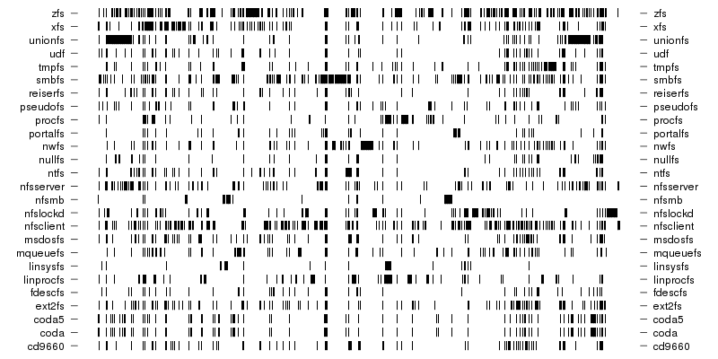
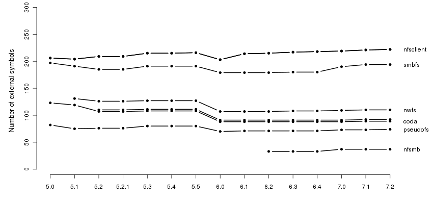
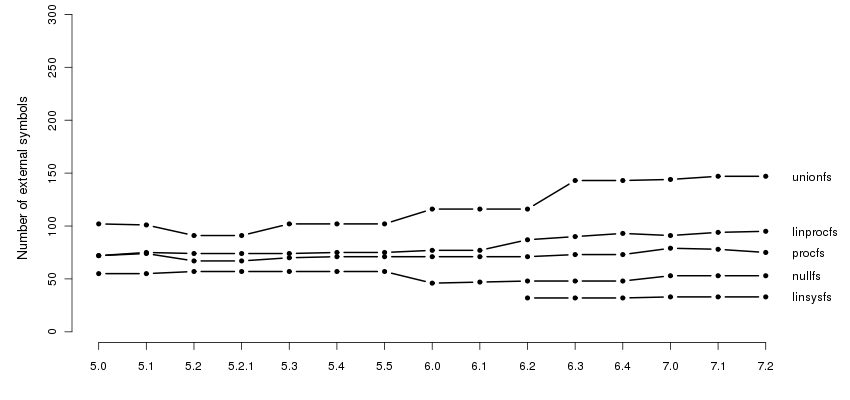
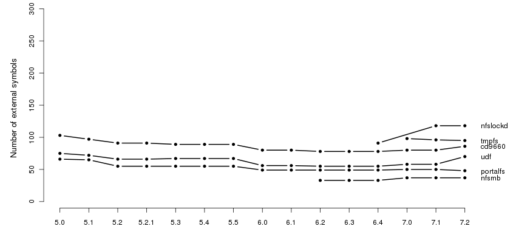
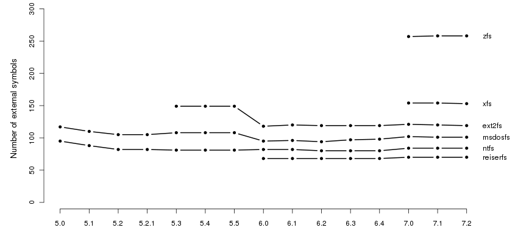
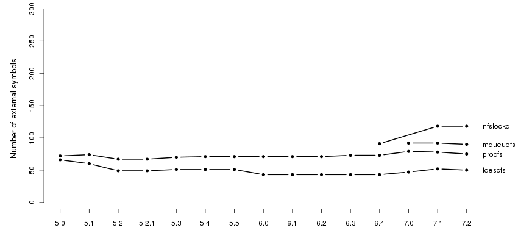
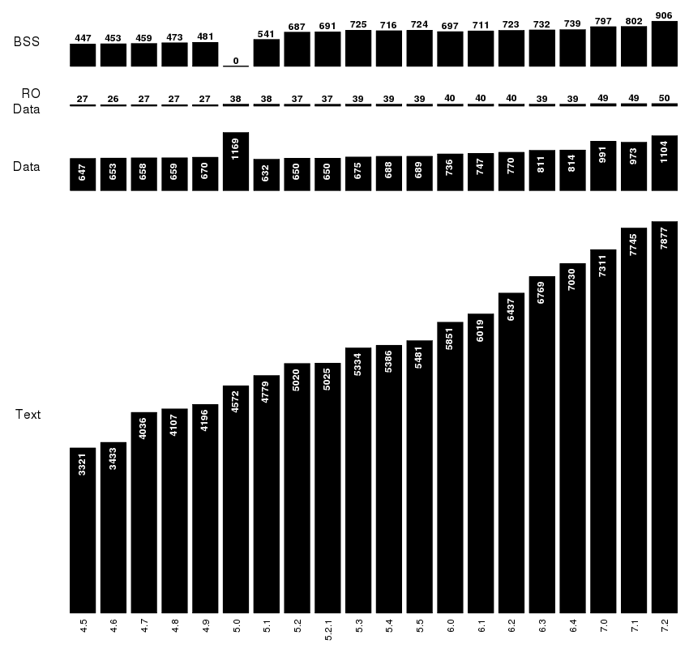
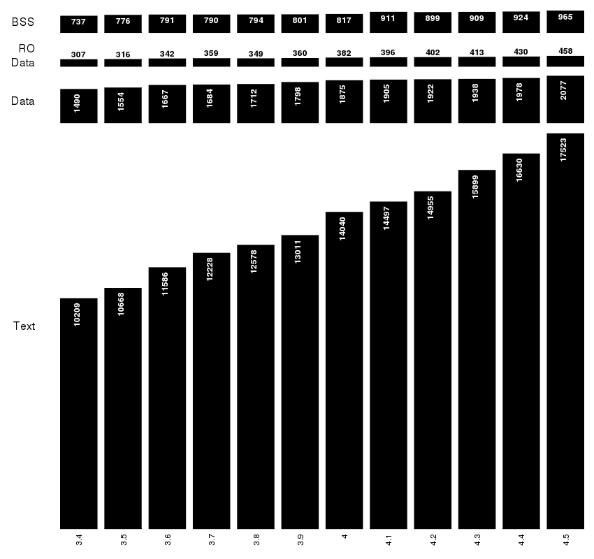
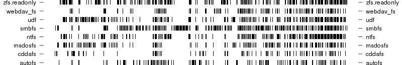

The BSD Family
In this section we are going to take a quick look at the BSD world. The operating systems considered are FreeBSD, NetBSD, OpenBSD and Darwin. All the systems have support for kernel modules but their use in NetBSD and OpenBSD is limited. The "over time" term is used here to refer to releases. Timelines for all the systems except Darwin are presented in Appendix B.
Map of the external symbols for FreeBSD 7.2.
As before, each tick represents an external symbol. The horizontal
axis contains 832 symbols. The 26 .ko modules related to
file systems were taken from the boot/kernel directory of
the bootonly install CD. The FFS, the native filesystem for
FreeBSD, is not compiled as module so it doesn't show up here.

Number of external symbols over time for FreeBSD.
To avoid overlapping this plot is split in five parts. A few
things are noticeable: first, for most of the modules the number
of external symbols dropped from 5.5 to 6.0 and second, with one
exception (unionfs) all the other file systems didn't
change much.





Exported symbols over time for FreeBSD.
Because the compiled kernel is readily available, an easy thing
to do is to look how the number of exported symbols changed over
time. Note that this plot starts with FreeBSD 4.5, the first
release for which symbols were not stripped from the kernel.

Exported symbols over time for NetBSD.
Unlike FreeBSD, in NetBSD there are significant, usually increase,
in the number of symbols from one major release to another. The
plot starts from 1.5 because that was the first one being compiled
as ELF.

Exported symbols over time for OpenBSD.
As in the case of NetBSD, the graph is shorted at the left because
all the older ones are a.out.

Map of the external symbols for Darwin 9.7.0.
This is the kernel for MacOS X 10.5.7. Each tick represents an
external symbols. There are 489 symbols on the horizontal axis.
